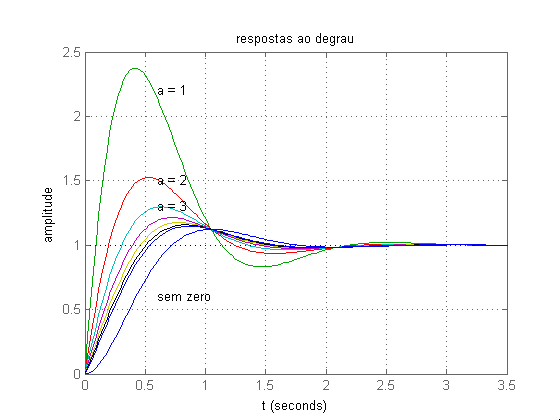
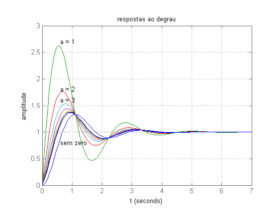

sobre
- Autor: Jonas Vieira de Souza
- Data: 11/09/2018
- Objetivo: Comparar respostas ao degrau
Contents
configurações iniciais
...
close all; clear; clc; s = tf('s');
gza(s)
...
num1 = 13;
den = (s^2 + 4*s + 13);
figure(1);
for i = 1:8
if (i-1) == 0
num = num1;
else
num = ( (num1/(i-1)) * (s + (i-1)) );
end
step(num/den);
hold on;
end
text(0.6, 2.2, 'a = 1');
text(0.6, 1.5, 'a = 2');
text(0.6, 1.3, 'a = 3');
text(0.6, 0.6, 'sem zero');
title('respostas ao degrau');
xlabel('t');
ylabel('amplitude');
grid on;
hold off;

gzb(s)
...
num1 = 9;
den = (s^2 + 2*s + 9);
figure(2);
for i = 1:8
if (i-1) == 0
num = num1;
else
num = ( (num1/(i-1)) * (s + (i-1)) );
end
step(num/den);
hold on;
end
text(0.6, 2.7, 'a = 1');
text(0.6, 1.8, 'a = 2');
text(0.6, 1.6, 'a = 3');
text(0.6, 0.8, 'sem zero');
title('respostas ao degrau');
xlabel('t');
ylabel('amplitude');
grid on;
